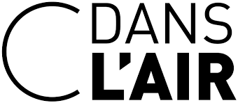
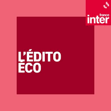

Année 1 - Compétence 7 : Culture générale
Tout au long de l'année, nous cherchons à enrichir nos connaissances en se fixant des objectifs à réaliser, une fréquence, et un moyen de parvenir à la réussite de l'objectif. Voici une partie de mes objectifs de première année, ainsi que leur avancement.
Visites à Paris :
Durant cette visite, nous avons été dans plusieurs monuments historiques, et avons renforcé notre culture générale. Parmi les lieux visités, nous avons vu le sénat, où nous avons assisté à une réunion dans l'hémicycle, puis nous avons rencontré un sénateur. Par la suite, nous avons été au musée d'Orsay, et aux Invalides, observant notamment le tombeau de Napoléon
Pour atteindre cet objectif, j'ai utilisé différents moyens : La lecture d'articles, le visionnage d'émissions télévisées, et l'écoute de programme radiophonique en lien avec l'économie et la politique.
Exemple
-
Lecture d'articles
Le Monde -
Emissions télévisées
C dans l'air -
Programme radiophonique
édito éco de France Inter
Exemple
2 quizz / semaine sur les pays européens et leurs capitales à l'aide de l'application 'Europe Geography'